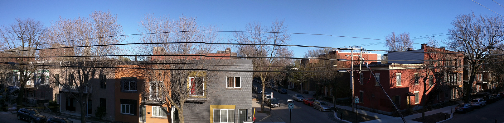

Emménagement29 avril 2017
Après presque deux mois sans écrire de newsletter, j'ai des tonnes de choses à raconter qui ne peuvent loger dans une seule et même page !
C'est pourquoi je vais en publier exceptionnellement deux en même temps.
Je voulais en faire une en mars sur un très beau chalet au bord d'un lac en plein hiver, mais je n'ai pas trouvé le temps, et c'est un peu trop tard pour la publier à présent... Et puis bon Fuck-it l'hiver !
Déménagement
Puisque cette news s'intitule "Emménagement", vous l'aurez deviné, j'ai déménagé ! Incroyable ! Stupéfiant même !
Pour rappel, j'étais parti au départ sur une location temporaire et meublée.
Mon bail se terminant fin mars, et ni mon propriétaire ni moi ne souhaitant le renouveler, je suis alors parti à la recherche d'appartement pour le 1er avril.
Mon propriétaire ne voulait pas renouveler car il loue l'appartement à la semaine en "mode Airbnb" en pleine saison.
Et moi, et bien principalement parce que 1) trop bruyant à cause de la circulation et 2) parce que envie d'avoir "mon chez moi".
Se sentir chez soi !
Même si je suis parti pour faire deux années, je ne souhaitais plus du tout vivre en meublé, car simplement on ne peut pas se sentir réellement chez soi.
Et par ailleurs, je voulais vivre dans un grand appartement : pas de raison de ne pas se faire plaisir !
Je suis donc parti à la recherche d'appartements et j'ai trouvé celui-ci, un 4 1/2, c'est-à-dire un deux chambres, dans une construction récente.
Environ 75 m² + balcon.
C'est vraiment grand et hyper lumineux (7 fenêtres dans la pièce à vivre).
Il est juste parfaitement situé : à l'intersection de deux très jolies rues très calmes ; et pourtant à seulement un bloc d'une rue principale avec absolument toutes les commodités un peu comme un centre-ville en France ; et dans l'autre sens à un bloc également d'un immense parc. Le métro à 10 minutes à pied ; et à quelques pas des copains.
J'ai même un dépanneur juste en face (j'y suis allé en pantoufles récupérer des bières : j'approuve !), et un super caviste à bières locales à deux blocs ! Tchin tchin !
J'ai pu acheter une partie des meubles + les 5 électros aux locataires partants, et pour le reste j'ai fait essentiellement du IKEA.
Bon les photos datent un peu, il y a une télé + home-cinema à présent dans le salon et d'autres bricoles.
Il me reste à présent essentiellement de la déco à rajouter, et mettre un bureau dans la deuxième chambre.
La photo tout en haut de la newsletter est une vue de l'appart.
... Le saviez-vous ?
- Au Québec, pour dire bientôt / plus tard, on dit "tantôt"
- Les chips s'appellent les croustilles
- Les toilettes s'appellent aussi la salle de bain, comme aux US.
- Vous entendrez à tout va "fait que" dans les phrases : ça remplace notre "en fait" ou autres petits tics du langage
- Une place = un endroit (exemple : c'est une très bonne place pour manger)
- Connaissiez-vous le "bris d'équipement" ?
- Vous entendrez également à tout va, comme chez les anglophones "Oh boy !" = "punaise !"